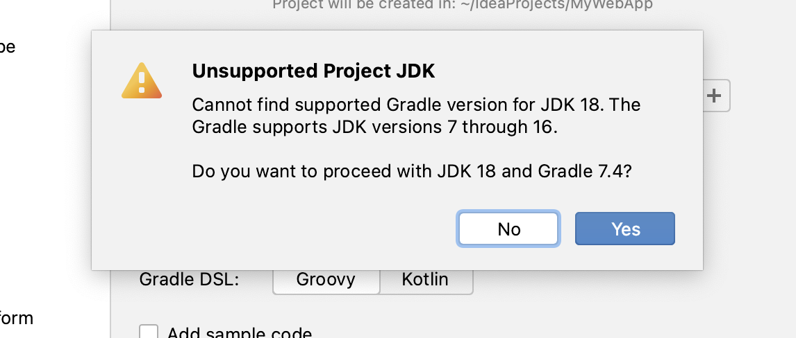

Chapter 32 A first project
32.1 Introduction
The topic of this presentation is getting started with a Java web application using a Thymeleaf View that serves an internationalized welcome message.
Since JSP and not Thymeleaf is the default for basic Java web applications, this involves quite a few steps:
- configuring IntelliJ with the application server Tomcat
- creating a Gradle-managed web project
- creating a Thymeleaf template
- configuring the use of Thymeleaf
- creating a servlet
- running the web application
You should realise that creating a web app from scratch is something you don’t do very often so it is not that terrible it takes some time. Also, this example makes use of a resource bundle supporting multiple languages (internationalization) and that is something you won’t do with every app you build.
Prerequisites
- Tomcat. I assume you have a working version of Tomcat server (see http://tomcat.apache.org/). This tutorial uses Tomcat 9.0.XX - (Tomcat 10 failed for mysterious reasons on my machine!). Simply extract the downloaded zip at a convenient location. Don’t forget to make the
*.shscripts in thebinfolder executable! - IntelliJ Idea. This blog uses the 2022.2.1 Ultimate version. Please refer to Jetbrains for educational licences.
32.2 The steps
Configure Tomcat as webserver
After extraction of Tomcat the Tomcat server application (and making the *.sh scripts executable), you’ll have to let IntelliJ know where it is.
You do this via Preferences → Build, Execution, Deployment → Application Servers → click + (Add) and point to the location where you extracted Tomcat.
Configure Tomcat
Create a Gradle-managed web project
Creating a Gradle-managed web project in IntelliJ:
- Choose
File→New→Project
You see something like this:
Gradle project creation
Enter GroupId (your unique identifier to this project), ArtifactId (its name) and Version and click Create.
You may get an error message like this: 
Don’t worry, simply click Yes. We’ll fix that first.
You will have something like this, after Gradle has build the project (this may take some time, depending on your machine and internet connection):
New Gradle project
To solve the warning (if you had any), open file gradle-wrapper.properties under gradle/wrapper/ and change the version number to 7.5, then hit “Load Gradle Changes” button:
New Gradle project
Configure Gradle
In this project, we’ll be using Thymeleaf and JUnit5 (and the Servlet API). Since they are not available in Java by default (i.e. not in the standard JDK), you’ll need to configure them as your projects dependencies.
Fortunately, Gradle is an excellent tool for dependency management.
Here is the contents of a basic build.gradle configuration file for a web app:
plugins {
id 'war'
id 'java'
id 'idea'
}
group 'nl.bioinf.nomi'
version '0.0.1'
repositories {
mavenCentral()
}
dependencies {
//Servlets
implementation 'javax.servlet:javax.servlet-api:4.0.0' # or 3.1.0
//Thymeleaf
implementation 'org.thymeleaf:thymeleaf:3.0.15.RELEASE'
//JUnit
testImplementation 'org.junit.jupiter:junit-jupiter-api:5.8.1'
testRuntimeOnly 'org.junit.jupiter:junit-jupiter-engine:5.8.1'
}
test {
useJUnitPlatform()
}The WEB-INF folder
Under main, create folder webapp, create a folder called WEB-INF and within that one a folder called templates. Within templates, create the html file called welcome.html. You can do that via context menu New → Thymeleaf or simply New → HTML File.

Create WEB-INF
Your file welcome.html should have this contents:
<!DOCTYPE html SYSTEM "http://www.thymeleaf.org/dtd/xhtml1-strict-thymeleaf-4.dtd">
<html xmlns="http://www.w3.org/1999/xhtml" xmlns:th="http://www.thymeleaf.org">
<head>
<title>Thymeleaf Starter</title>
<meta http-equiv="Content-Type" content="text/html; charset=UTF-8" />
</head>
<body>
<!-- welcome message read from resource bundle welcome.html-->
<p th:text="#{welcome.msg}">Welcome Offline</p>
<!-- date forwarded from the servlet-->
<p>Date: <span th:text="${currentDate}">Sat Oct 24 2015</span></p>
</body>
</html>Note the <!DOCTYPE...> declaration on top declaring it to be a Thymeleaf page.
There are several non-html syntax elements that make this page special:
#{...} and ${...} and the Thymeleaf tag attributes th:text.
#{...} fetches the value from the resource bundle (files named xxxxx.properties discussed below). The expression #{welcome.msg} gets the value of key welcome.msg from the file welcome_xx.properties. The expression ${...} fetches the value set in the WebContext instance. The expression ${currentDate} gets the value for the attribute currentDate set in WebContext.
Much more on that stuff.
Other than that, this is a plain old html file. You can open it in any browser and it will show you the non-processed view. This is what makes Thymeleaf so nice; you can develop the view of your app without using servers or template engines!
Create a resource bundle
A resource bundle is where you store your web page texts, if you ever want to support more than one language. Instead of creating web pages for every language you are willing to support, you create text-free web pages and store the texts for the different languages in separate files called resource bundles.
This is how you add language support to your web app:
Right-click the templates folder, select New → Resource Bundle →
Type welcome as base name →
Click + under Locales to add and add en →
Click OK → Click OK again to finish.
Create Resource bundle 1
The resource bundle will open in your editor. It has plain text view and “Resource Bundle” view. (You may need to install the Plugin for that via Preferences → Plugins → search for Resource Bundle Editor in Marketplace).
Here I choose the latter. Click ‘+’ to add a new Property key and name it welcome.msg.

Create Resource bundle 2
Give some Dutch (or other language of course) and English values for welcome.msg.

Create Resource bundle 3
Now you have internationalized your view.
Note that in Text view (the default when no plugin is present), you can simply enter key=value pairs in each of your resource bundle files. This one is in welcome.properties:
welcome.msg=Hallo dan!Prepare to use Thymeleaf
Thymeleaf needs some configuration to get going. Here is some boilerplate code that you can simply copy-and-paste.
Under main/java, create a base package using the context menu looking like this <your_._domain>.<your_name>.<your_project>, e.g. nl.bioinf.nomi.mywebapp. Within it, create two additional packages: config and servlets. Under config, create a new Java class file WebConfig.java. Put this code in there, and change the package declaration to match your situation:
package nl.bioinf.wis_on_thymeleaf.config; //change this for your situation!
import org.thymeleaf.TemplateEngine;
import org.thymeleaf.templateresolver.ServletContextTemplateResolver;
import javax.servlet.ServletContext;
import javax.servlet.http.HttpServletResponse;
public class WebConfig {
public static TemplateEngine createTemplateEngine(ServletContext servletContext) {
ServletContextTemplateResolver templateResolver =
new ServletContextTemplateResolver(servletContext);
templateResolver.setTemplateMode("XHTML");
templateResolver.setPrefix("/WEB-INF/templates/");
templateResolver.setSuffix(".html");
templateResolver.setCacheTTLMs(3600000L);
// Cache is set to true by default.
// Set to false if you want templates to be automatically
// updated when modified.
templateResolver.setCacheable(true);
TemplateEngine templateEngine = new TemplateEngine();
templateEngine.setTemplateResolver(templateResolver);
return templateEngine;
}
/**
* Configures the response in a standard way.
* @param response
*/
public static void configureResponse(HttpServletResponse response) {
response.setContentType("text/html;charset=UTF-8");
response.setHeader("Pragma", "no-cache");
response.setHeader("Cache-Control", "no-cache");
response.setDateHeader("Expires", 0);
}
}The main role of this class is to provide a template engine. This is the component of your application that is responsible for processing the Thymeleaf templates into html views. To do this, the template engine needs to know -amongst other things- where these templates are. That is the responsibility of the TemplateResolver. have a look at the code and try to understand what’s happening.
Create a Servlet
Finally, everything is going to fall into place. Under package ....servlets, create a new Servlet class with the contents listed below. If you have that context menu item whan right-clicking on the servlets package, you can use the New → Servlet wizard; if not, use New → Java class to create one from scratch.
package nl.bioinf.wis_on_thymeleaf.servlets; //change to your situation!
import nl.bioinf.wis_on_thymeleaf.config.WebConfig; //change to your situation!
import org.thymeleaf.context.WebContext;
import javax.servlet.ServletContext;
import javax.servlet.ServletException;
import javax.servlet.annotation.WebServlet;
import javax.servlet.http.HttpServlet;
import javax.servlet.http.HttpServletRequest;
import javax.servlet.http.HttpServletResponse;
import java.io.IOException;
import java.util.Date;
@WebServlet(name = "WelcomeServlet", urlPatterns = "/welcome", loadOnStartup = 1)
public class WelcomeServlet extends HttpServlet {
@Override
public void init() throws ServletException {
System.out.println("Initializing Thymeleaf template engine");
final ServletContext servletContext = this.getServletContext();
WebConfig.createTemplateEngine(servletContext);
}
private static final long serialVersionUID = 1L;
public void doPost(HttpServletRequest request, HttpServletResponse response) throws IOException{
process(request, response);
}
public void doGet(HttpServletRequest request, HttpServletResponse response) throws IOException{
process(request, response);
}
public void process(HttpServletRequest request, HttpServletResponse response)
throws IOException {
//this step is optional; standard settings also suffice
WebConfig.configureResponse(response);
WebContext ctx = new WebContext(
request,
response,
request.getServletContext(),
request.getLocale());
ctx.setVariable("currentDate", new Date());
WebConfig.createTemplateEngine(getServletContext()).
process("welcome", ctx, response.getWriter());
}
}Of course, the package declarations will be different, as well as the first import statement.
The alert reader may notice that this will create a TemplateEngine for each single servlet. This is absolutely not the best strategy, but for simplicity we’ll stick to it for now.
Have a look at the Demo repo for a final solution with the template resolver.
Finally: run it
Create a new run configuration (it’s in the top bar, Add Configuration).
Click + → select Tomcat Server/Local (NOT TomEE Server!). Make sure the Application server is defined (your unpacked Tomcat location), use for URL
this address: http://localhost:8080/welcome.
Note the Warning: no artifacts... message at the bottom. Click Fix → select either one of the options Gradle....war and in Application context (you are now under Tab Deployment) fill in / instead of /Gradle___nl_bioinf_nomi___MyWebApp_0_0_1_war. If you don’t do this, you will need to add this to your URLs!

Run the Application 1

Run the Application 2
If you run the configuration (Green triangle in menu bar), the browser will fire op or you’ll have to do it yourself, and go to http://localhost:8080/welcome.
(If you get an error message like “… Permission denied” you may have forgotten to make the files in the /bin folder of your Tomcat folder executable.
I hope you’ll see something like this:

Run the Application NL
Go to chrome://settings/languages and change your language to English, refresh the view of your welcome page and you’ll see this:

Run the Application EN
That’s it. It was quite some work, but this is the foundation for a nice basic Java + Thymeleaf driven web application.